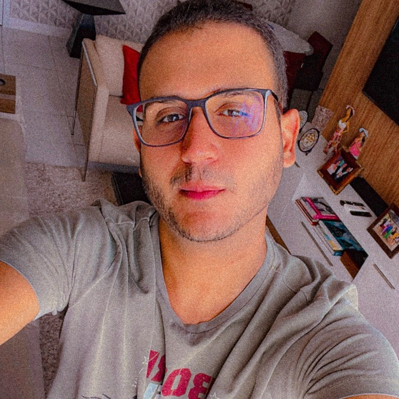

👋 Olá, me chamo Vitão! ⏳
Sobre mim:
Estou sempre em busca de aprender, adoro descobrir todas as coisas novas e muito apaixonado por tecnologia.- Brasileiro, Solteiro, 24 anos e Nascido em Recife-PE;
- Deficiente Auditivo Bilateral e/ou Surdo;
- Engenheiro Civil, possuo um registro profissional no CREA-PE;
- Me formei no Curso Superior de GRADUAÇÃO - Bacharelado em Engenharia Civil por Universidade Católica de Pernambuco (UNICAP), concluído em 2020.2;
- Atualmente estou cursando a segunda graduação de Tecnólogo em Análise e Desenvolvimento de Sistemas (ADS) por Universidade Estácio de Sá - EAD, previsão de término de curso em março de 2025.
- Atualmente trabalho autônomo em home office em uma empresa de impermeabilização, no cargo de Analista de Projetos;
- Atualmente trabalho voluntário em Diretoria da FPEDS (Federação Pernambucana Desportiva de Surdos), da gestão de 2022 a 2026, no cargo de Diretor Administrativo;
- Estou interessado em Desenvolvimento Web Front-End, Fotografia e Investimentos;
- Atualmente estou aprendendo em programação, estudando HTML, CSS, JavaScript e mais ferramentas.